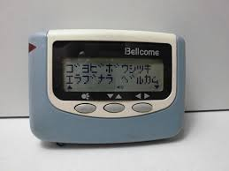
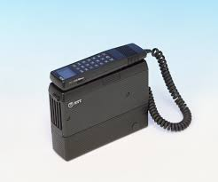
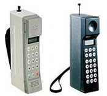
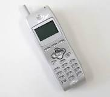
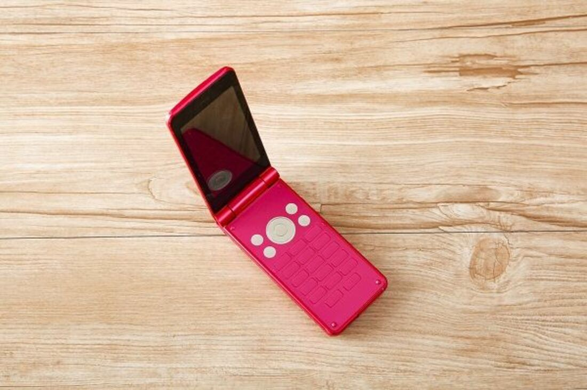
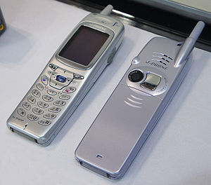
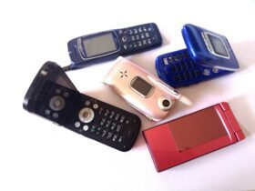
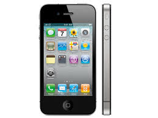
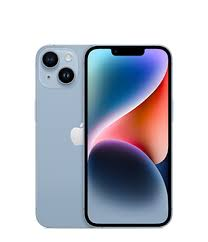

携帯電話の歴史
| 年・名前 | 説明 | 画像 |
|---|---|---|
| 1968年 ポケットベルサービスの開始 |
携帯電話やスマートフォンがない当時は、公衆電話や固定電話を 使わなければ電話をすることができませんでしたが、ポケベルの 登場によって外出中でも手軽に連絡を取ることができるようにな りました。 |  |
| 1985年 肩掛け型携帯電話機サービスの開始 |
無線機や電池が小型化される前なので、重さが約3kgもあった 肩から下げて持ち運ぶことができ、自動車から離れても利用できる |  |
| 1987年 携帯電話機サービスの開始 |
この携帯電話の端末はショルダーホンより小型化・軽量化したものの、 750g（500mlのペットボトル1.5本分）の重さがありました。 |  |
| 1995年 PHSサービスの開始 |
パーソナルハンディフォンシステム = 個人の手軽な電話という意味合いのとおり、 PHSは個人が簡単に利用できる有用な通話手段となった |  |
| 1999年 インターネット接続サービス開始 |
通話だけでなく、携帯電話から電子メールの送受信、天気予報、ニュースなどのウェブサイトの閲覧、チケット予約や、モバイル・バンキングなども、携帯電話経由で可能となりました。 |  |
| 2000年 カメラ付き携帯電話登場、オーディオ機能付き携帯電話登場 |
自分を撮影するための鏡が背面に付いていること、撮影音を消せないなどの配慮がなされていた。 性能は十分とは言えず、必要性を疑問視する声も少なくなかった。 |  |
| 2001年 第3世代携帯電話(3G) |
テレビ電話が可能となったほか、パソコンと接続して高速なデータ通信が行えるようになった。 世界全体での普及率が5割に達した。 |  |
| 2010年 iPhone(4G) |
iPhone」をきっかけに、世界的にスマートフォンへの移行がはじまった より大容量になり・通信速度が向上し急激なスマホの普及にともなって、ツイッターやフェイスブック、インスタグラムといったSNS利用者が急増 |  |
| 2020年 iPhone(5G) |
「高速大容量」「高信頼・低遅延通信」「多数同時接続」の3つをコンセプトに登場 4Gに比べて約20倍の通信速度を誇る |  |